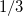
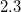
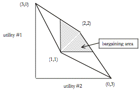

5 Теория переговоров и контрактуализм
Как мы видели выше, одно из претензий к функционализму заключается в том, что он не объясняет связи между индивидуальным выбором и возникновением и сохранением моральных норм. Мораль вводится как нечто вне индивидуального рационального выбора. В ответ на эту трудность многие теоретики пытались понять нравственность как результат индивидуального рационального выбора. Приблизительно мы можем выделить две стратегии. Во-первых, есть те, кто моделирует мораль в результате однократного выбора очень большого набора агентов, морального сообщества. Во-вторых, есть те, кто подходит к морали в результате серии повторяющихся мелкомасштабных взаимодействий. Мы обсудим этот второй подход в section 8. Здесь мы обсудим подход, который рассматривает мораль как предполагаемый результат взаимодействия между рациональными агентами при одинаково идеальных обстоятельствах. Это старая идея в моральной и политической философии: это идея социального контракта. Мораль интерпретируется как результат процесса переговоров.
Введение теории игр, особенно тех частей теории, которые связаны с переговорами (так называемая кооперативная теория игр и теория переговоров), стимулировало интерес к теории социального контракта за последние десятилетия. Джон Харсани, Ричард Брэйтвейт, Джон Роулз, Брайан Барри и Дэвид Готье (John Harsanyi, Richard Braithwaite, John Rawls, Brian Barry, and David Gauthier) использовали теорию игр и теорию принятия решений для формулирования своей версий теории (Harsanyi 1955; Braithwaite 1955; Barry 1965; Rawls, 1971; Gauthier, 1986). Ссылаясь на теорию переговоров, они попытались показать:
что рациональные агенты в подходящей идеализированной переговорной ситуации согласуют конкретное, уникальное распределение преимуществ сотрудничества;
как выглядит это распределение;
что это распределение определяет как справедливость;
что рациональные агенты будут соблюдать условия сделки (в случае с Готье).
Для этих теорий важно, как именно характеризуется переговорная ситуация. Готье, как и многие другие, думает о ней как о дилемме заключенного. То есть, затруднительное положение сторон в идеальном переговорном положении структурно эквивалентно ситуации артиллеристов, которую мы описывали выше. Без какого-либо сотрудничества артиллеристы обречены бежать и провести оставшуюся часть войны в плену. Предположим, что в этой ситуации можно заключить обязывающие соглашения. Решает ли это проблему угрозы Парето-неэффективности? Нет, потому, что не ясно, как будут распределены выгоды от сотрудничества. Может показаться, что в этом случае есть только один способ, которым они могут быть распределены, но это обманчивое впечатление. Артиллеристы могли решить следовать смешанной стратегии. Смешанная стратегия - это лотерея поверх доступных стратегий каждого индивида. Например, артиллеристы могут решить бежать с вероятностью, скажем, 1/3 и остаться и сражаться с вероятностью 2/3. (Следует отметить, что идея смешанной стратегии обычно вводится в контексте так называемой кардинальной полезности, ранее числа в матрице (0, 1, 2 и 3) только обозначали ранжирование результата, а теперь предполагается, что числа предоставляют некоторую информацию об относительном ранжировании результата. Например, полезность «2» кооперативного результата означает, что агент безразличен между этим результатом и попыткой, в которой с вероятностью  будет получен результат «0» (худший результат), а также попыткой, в которой с вероятностью  будет получен результат «3» (лучший результат) (подробное обсуждение кардинальной теории полезности см. в разделе 3.5 статьи о толкованиях вероятности, а также статью о Санкт-Петербургском парадоксе). Начиная с этого момента, мы предполагаем, что числа в матрице обозначают такую кардинальную полезность.)
Артиллеристы понимают, что каждый из них в отдельности может реализовать хотя бы один, но худший результат отказа от сотрудничества. Это означает, что результат их соглашения должен быть по меньшей мере столь же хорош, как и результат, не связанный с сотрудничеством. Поэтому распределение, с которым они согласятся, должно быть не менее 1. Предположим, что у канониров есть пара игральных костей. Теперь они могут реализовать кооперативные распределения, отличные от 2. Например, если они согласны бросить оба кубика, и если сумма окажется 6 или меньше, то # 1 будет бежать (таким образом, реализуя значение полезности 3). Однако, если сумма обоих костей больше 6, # 1 останется и сразится с врагом (получая худший результат равный 0). Ожидаемая полезность этой сделки для # 1 равна  , а # 2 может ожидать 1.75 от этой сделки. Таким образом, артиллеристы могут реализовать целый ряд результатов, варьируя шансы, которые улучшают результат, не связанный с кооперацией. Эти результаты составляют область переговоров (см. 2).
, а # 2 может ожидать 1.75 от этой сделки. Таким образом, артиллеристы могут реализовать целый ряд результатов, варьируя шансы, которые улучшают результат, не связанный с кооперацией. Эти результаты составляют область переговоров (см. 2).

Интуитивно может показаться простым, что результатом соглашения между #1 и #2 будет (2,2). Формально это не так просто. Каждый результат, который дает каждому артиллеристу ожидаемую полезность более 1, кажется рационально приемлемым. Какой из них выберут рациональные артиллеристы? В рамках теории переговоров, части теории игр, которая занимается этими проблемами, существует два подхода, которые стремятся ответить на этот вопрос (Binmore 1998, chapter 1). Во-первых, традиционный аксиоматический подход развит в контексте кооперативной теории игр. Эта ветвь теории игр предполагает, что, как только рациональные агенты придут к соглашению, они будут ее соблюдать. Задача теоретика состоит в том, чтобы рассмотреть область переговоров и определить, какой результат удовлетворял бы ряду разумных требований рационального исхода переговоров.
Такие вещи, как имена заинтересованных сторон, не должны иметь значения для результата, тогда как их предпочтения имеют значение. Этот подход оказал большое влияние на теорию теоретико-игрового социального контракта. Харсаньи, Роулс, Барри и Готье (Harsanyi, Rawls, Barry, Gauthier) использовали аксиоматические подходы, чтобы оправдать каждый свою версию. Однако, их вердикт в случае с канонирами один и тот же: наиболее рациональный вариант - это распределение, которое дает каждому наводчику ожидаемую полезность, равную 2. (Обратите внимание, что этот вердикт не сообщает артиллеристам, как им следует реализовать этот результат. Два способа, которыми они могли бы обеспечить ожидаемый результат (2, 2). Они могли бы остаться и сражаться, или они могли бы щелкнуть справедливой монетой, чтобы решить, кто может остаться, а кому разрешено бежать.) От переводчика: пока не понимаю как можно получить (2,2) если один сбежит, получится либо (0,3), либо (3,0).
Аксиоматический подход не обращает внимания на структуру процесса переговоров. Все что он требует - чтобы в качестве исходных данных была информация о вознаграждениях сторон. Хотя верно то, что иногда не имеет особого значения, как именно структурируется переговорный процесс, иногда это очень важно. Например, если #1 может подать заявку, а #2 только может принять или отклонить, то #1 скорее всего предложит #2 ожидаемую полезность 1.00001 и оставит за собой 2.99999. Учитывая правила переговорного процесса, #2 придется принять это, так как альтернатива (немного) хуже. С другой стороны, если правила допускают обмен претензиями и предложениями, ситуация совершенно иная. Поэтому, если вы хотите предсказать, каким будет результат переговорного процесса между рациональными агентами, важно знать правила переговоров в деталях, также как и область переговоров. Кроме того, важно знать, будут ли стороны придерживаться соглашения. Ибо, если это не так, маловероятно, чтобы заинтересованные стороны приняли соглашение вместо соглашения, которое окажется обязательным.
Поэтому лучше думать о процессе переговоров как о серии возможных ходов в игре, которая предшествует игре, с которой сталкиваются артиллеристы. Это второй подход, который рассматривает переговорные процессы как игру без сотрудничества. Решение такой игры тогда соответствует решению переговорного процесса. При таком подходе нужно уделять много внимания деталям. Следовательно, анализ является сложным и часто беспорядочным. (Это еще одна причина, почему аксиоматический подход настолько привлекателен для некоторых.)
Тем не менее, вполне возможно, что решение игры и решение, основанное на аксиоматическом подходе, идентичны. На самом деле, это то, чего вы ожидали бы, если предлагаемое аксиоматическое решение вообще правдоподобно. Эта интуиция является движущей силой так называемой программы Нэша (Nash 1950). Эта программа нацелена на оценку аксиоматических решений путем проверки того, приводит ли исход переговорной игры к одному и тому же результату. Успех программы Нэша имеет решающее значение для правдоподобия классических аксиоматических теорий социального контракта. Такие теории рассматривают нравственность как результат (гипотетических) переговоров между идеально рациональными агентами, но не утруждают себя точным указанием, как стороны достигают этого результата. Следовательно, если нет по крайней мере обещания такого детального анализа, как это было обещано по программе Нэша, то результат, который они представляют, не имеет правдоподобности. (более поздние трактовки проблемы переговоров см. Rubinstein 1982 and Binmore 1998). От переводчика: как я понимаю это возражение касается теории о том что мораль в прошлом была установлена путём переговоров, с моей точки зрения в прошлом явных переговоров не было, но ничего не мешает нам сегодня провести такие переговоры с помощью такой процедуры, которая позволяет сформулировать Парето-оптимальную мораль.